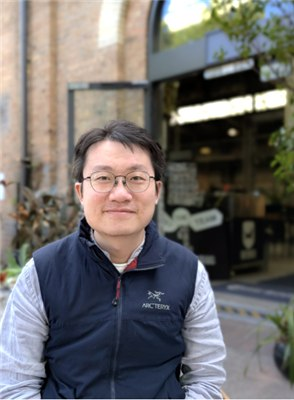
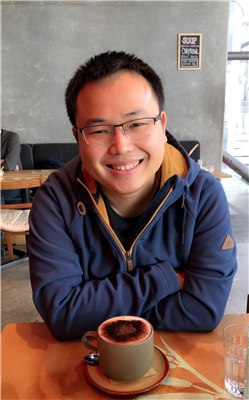
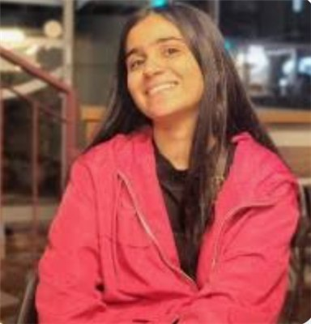
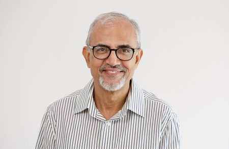

Invited speakers
The speaker lineup and presentation order are provisional.
-

Dr Zhigang Lu
Senior Lecturer
Western Sydney University
Beyond AI detection: Assessing Student Understanding in the Age of Generative AI
Talk abstract
The rapid adoption of generative AI is challenging traditional approaches to academic integrity, particularly for programming and other assignment-based assessments. Existing AI-detection methods attempt to determine whether a submitted artefact was generated by AI, but such detection is inherently fragile: generative models evolve rapidly, and today’s detection techniques may not remain effective against tomorrow’s models. In this talk, I present an alternative perspective: rather than attempting to detect AI, we assess the student’s understanding of their own submitted work. We are developing a GenAI-assisted assessment system in which a locally deployed large language model reads and analyses each student’s submission, automatically generates personalised questions about its design, implementation, and reasoning, and evaluates the student’s responses under controlled conditions. A student who genuinely produced the work should be able to demonstrate a corresponding level of understanding, regardless of what tools were used during its creation. This approach shifts the focus from identifying AI-generated artefacts to providing evidence of human authorship and understanding. I will discuss the motivation, system design, practical challenges, and broader implications of this approach for designing authentic and sustainable assessment in the era of generative AI.
-

Dr Matthew Kuo
Senior Lecturer
Auckland University of Technology
Matthew Kuo directs the Bachelor of Computer and Information Sciences and researches embedded systems, robotics and the Internet of Things.
Joint presentation with Dr Nathan Allen
Talk abstract
AI is reshaping the assessment landscape and prompting new ways to assure and evidence student learning. This presentation introduces AUT’s two-channel approach to assessment design, including the role of Points of Observation of Learning (POOLs). It then explores the redesign of assessment in COMP602 Software Development Practice, with practical examples and reflections on embedding POOLs. These examples show how students can provide evidence of their engagement with expected learning as part of their final submission, and how that evidence can be recognised in the rubric.
-
Dr Nathan Allen
Lecturer
Auckland University of Technology
Nathan Allen leads the Computer Science major and researches programming languages, formal methods and embedded systems.
-
Prof. Darryl Cochrane
Professor of Exercise and Health Science
Massey University
Darryl Cochrane researches exercise and sport performance, including strength and conditioning and the effects of vibration exercise.
-
Dr Shyamli Sindhwani
Professional Teaching Fellow
University of Auckland
Shyamli Sindhwani teaches computer science and co-leads a project on AI literacy and teaching practice in higher education.
-
Dr Bashar Barmada
Senior Lecturer and Academic Programme Manager
Unitec
Bashar Barmada manages pre-degree computing programmes. His interests include cybersecurity, networking, applied IoT and the use of generative AI in computing education.
-

Dr Ojaswini MalhotraOnline
Lecturer in Information Technology
Charles Darwin University
Ojaswini Malhotra teaches information technology and has researched how to assess cybersecurity maturity in the aviation sector.
-

Dr Rajeev SharmaOnline
Senior Lecturer in Marketing
Charles Darwin University
Rajeev Sharma teaches marketing and has researched technology adoption in Australian universities.
-
Angela Tsai
Senior Learning Designer, SFHEA
Auckland University of Technology
Angela Tsai works with teaching staff on curriculum and assessment design. Her interests include assurance of learning in the age of AI and staff development.
-
Dr Zhuang Li
Lecturer in Data Science and Artificial Intelligence
RMIT University
Zhuang Li researches natural language processing, data-efficient AI, and the alignment and safety of language models.